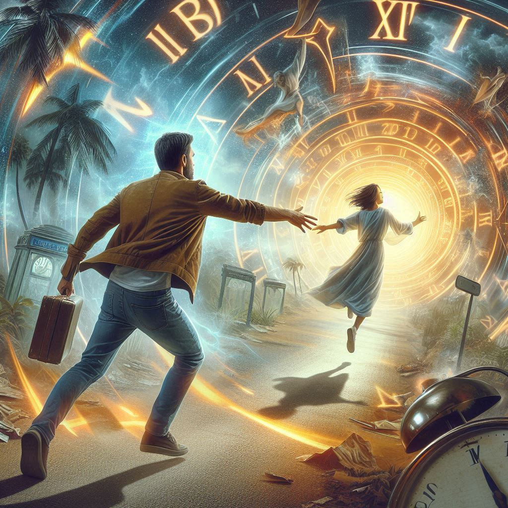

어느 날, 내 죽음에 네가 들어왔다
목차
작가
세이카 료겐
출판일
2022년 5월 9일
감상평에 대한 AI그림
수명이 3년 빡에 안남은 시한부가 된다는 조건으로 시간을 하루 전으로 되돌릴 수 있는 능력을 얻은 주인공이 가정의 무관심과
심한 학교폭력으로 자살하려는 소녀를 구하기 위해 계속 시간을 역행하는 소설로 가면서 여주가 자살을 안하고 서로가 서로의
살아갈 의미가 되주는 것 같지만 3년뒤 남주는 죽는다는 것을 알기에 달달하면서도 씁슬한 소설 이였다.

감상평에 대한 AI평가
~~~~AI평가~~~~~
✨ 죽음이라는 무거운 주제를 중심으로 전개되며, 각 인물들의 감정과 그로 인한 변화가
사실적으로 그려져 있습니다. 이를 통해 죽음이 사람들에게 미치는 영향과 그로 인한
감정 변화를 깊이 있게 탐구합니다.
✨ 각 인물들은 다층적인 성격과 복잡한 내면을 지니고 있으며, 그들의 이야기는 독자들에게
공감을 불러일으킵니다. 특히, 주인공의 심리적 변화와 그로 인한 성장 과정이 인상적입니다.
✨ 이야기는 서서히 전개되며, 독자들은 각 사건을 따라가며 인물들의 감정에 몰입하게 됩니다.
죽음과 삶, 그리고 관계의 의미에 대해 생각하게 만드는 감동적인 서사가 돋보입니다.